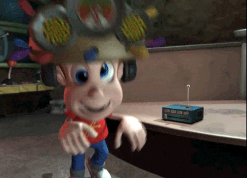

Encuesta sobre la Conservación de la Masa En los Cambios Químicos

1. ¿Qué establece el principio de conservación de la masa?
La masa total en un sistema cerrado permanece constante durante los cambios físicos y químicos.
La masa puede ser creada o destruida durante las reacciones químicas.
La masa de los productos es diferente de la de los reactivos.
2. ¿Qué ocurre con la masa durante un cambio físico?
La masa cambia de forma pero se conserva.
La masa se destruye durante el cambio.
La masa total se conserva sin importar el estado.
3. ¿Cuál de los siguientes es un ejemplo de cambio físico?
La oxidación del hierro.
La fusión del hielo.
La combustión del hidrógeno.
4. ¿Qué sucede durante una reacción química según la ley de conservación de la masa?
La masa de los productos es menor que la de los reactivos.
La masa de los reactivos es igual a la masa de los productos.
La masa se pierde durante la reacción.
5. ¿Cuál es un ejemplo de un cambio químico?
La evaporación del agua.
La disolución de sal en agua.
La reacción del hidrógeno con oxígeno para formar agua.
6. ¿Cómo se utiliza la conservación de la masa en cálculos de estequiometría?
Para calcular la masa de los productos y reactivos en una reacción química.
Para medir la temperatura durante una reacción.
Para determinar el volumen de un gas.
7. ¿Qué se debe hacer si una ecuación química no está balanceada?
Ajustar los coeficientes para que la masa de los reactivos y productos sea igual.
Cambiar las masas de los reactivos y productos.
Ignorar el desequilibrio y continuar con el cálculo.
8. ¿Cuál de los siguientes no es un cambio físico?
La congelación del agua.
La formación de óxido de hierro.
La ebullición del agua.
9. ¿Cómo se verifica la exactitud de los experimentos en un laboratorio?
Comparando los resultados experimentales con la teoría basada en la conservación de la masa.
Usando diferentes métodos de medición.
Aumentando la cantidad de reactivos.
10. ¿Por qué es importante el principio de conservación de la masa en la industria?
Para diseñar y controlar procesos químicos.
Para aumentar la temperatura de las reacciones.
Para cambiar el color de los productos.
Enviar
Regresar